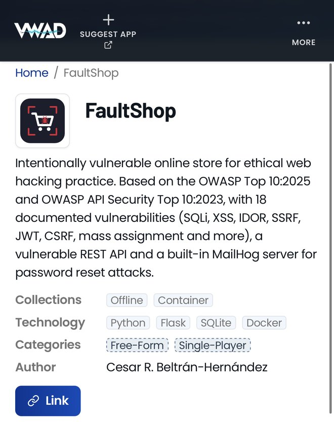

FaultShop: un laboratorio de hacking web con vulnerabilidades actuales
OWASPListado en el Vulnerable Web Applications Directory
FaultShop es un laboratorio para practicar seguridad web con vulnerabilidades que hoy aparecen en aplicaciones reales: tokens JWT mal validados, APIs sin autenticación, SSRF y mass assignment, además de las clásicas como inyección SQL y XSS. Todo dentro de una tienda en línea que se ve y funciona como una de verdad.

La tienda vende portátiles, periféricos y accesorios. Los usuarios tienen saldo, pueden comprar, dejar reseñas, descargar sus facturas y actualizar su perfil. Ahí es justamente donde están las fallas: en el flujo de compra, en la API que usa el sitio, en la recuperación de contraseña.
FaultShop está listado en el Vulnerable Web Applications Directory de OWASP, el registro de aplicaciones vulnerables para formación donde también están laboratorios como Juice Shop y DVWA.

Qué vulnerabilidades tiene
Están las clásicas, porque siguen apareciendo en aplicaciones reales: inyección SQL, XSS reflejado y almacenado, inyección de comandos, path traversal, CSRF y subida de archivos sin restricción.
Además de las que ya mencioné (JWT, APIs sin autenticación, SSRF y mass assignment), hay autorización rota a nivel de función y una recuperación de contraseña que se puede abusar. También hay errores de configuración, como el modo debug activo, cabeceras de seguridad ausentes y datos sensibles guardados en texto plano.
Cada vulnerabilidad está documentada y asociada a su categoría de OWASP. La lista completa está en el repositorio.
Para la recuperación de contraseña, FaultShop incluye un servidor de correo interno (MailHog). Los correos llegan a un buzón que se puede revisar desde el navegador, así que el ataque se prueba de principio a fin, como lo vería un usuario.
Pensado para usar en clase
La idea surgió en mis clases de hacking ético. Laboratorios como DVWA siguen siendo útiles para empezar, pero no cubren varias de estas fallas, y yo necesitaba un escenario más cercano a lo que se encuentra hoy en una auditoría.
Por eso FaultShop corre completo en Docker con un solo comando y tiene un botón para reiniciar el laboratorio, que deja todo como al principio en segundos. Con 18 vulnerabilidades, se puede trabajar en pocas sesiones de un curso.
Cómo probarlo
Solo se necesita Docker:
curl -sO https://raw.githubusercontent.com/CesarBeltran/faultshop/main/docker-compose.yml
docker compose up -dLa tienda queda en http://localhost:5000 y el buzón de correos en http://localhost:8025. Para entrar se puede usar carlos / password1. Es vulnerable a propósito, así que no conviene exponerlo a internet.
Si lo usas en un curso o crees que le falta alguna vulnerabilidad, me encantaría saberlo.
- OWASP VWAD: vwad.owasp.org/app/faultshop
- GitHub: github.com/CesarBeltran/faultshop
- Docker Hub: hub.docker.com/r/cbeltranh/faultshop